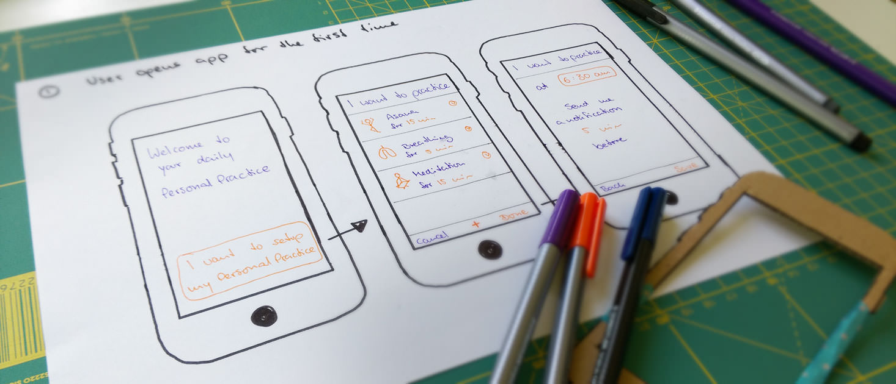

Hi there! I'm Silke.
Hands-on Product Designer with a passion for analytical and conceptual work.
My experience is ranging from health apps to administrative workflows and B2B platforms for new and existing products.
In my free time, I love being outdoors with my family, gardening, cooking, and getting creative with paper, fabric, and wood.

Skills
- 5 years of experience working with Figma
- Strong ability to analyze data and integrate insights into the design process
- Skilled in conducting and analyzing user tests and interviews
- Experience in building and maintaining design systems
- Proven track record of collaborating within cross-functional teams
- Experienced in planning and facilitating internal and external workshops
Strengths
- Strong analytical thinking and ability to empathize with users
- Structured and proactive working style
- Quick comprehension and ability to adapt to new topics rapidly
- Responsible, with clear and friendly communication
- Committed to fostering a positive, inclusive team environment where everyone feels valued